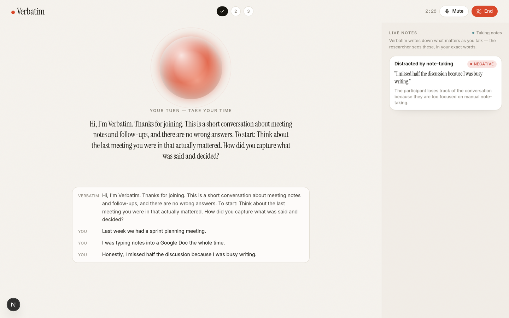
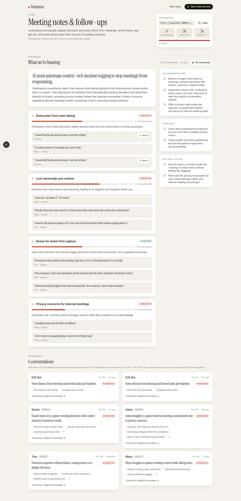

An AI interviewer that listens like a researcher — asks the follow-up, waits while you think, never cuts you off — and hands you the write-up like one.
Recruit, schedule, moderate, transcribe, synthesise. Most studies stop at 6–10 conversations.
So teams fall back to surveys — fast, cheap, and shallow. Nobody types the story of the sprint they lost.
Existing bots run on silence timers. You pause to think — and it decides you're done. Participants stop trusting it in one turn.
Three to six open questions and a research goal. Verbatim turns it into an interviewer with a plan — and the judgement to leave it for a good follow-up.
Participants talk. Semantic turn detection means a pause to think is never mistaken for the end of an answer; they can interrupt like they would a person.
Notes in the participant's exact words as they speak; an instant write-up; a study-wide synthesis where every quote plays back in their own voice.
The orb breathes while it listens. Captions land word-by-word as the audio plays. On the right, the interviewer's notes appear a beat after each answer: theme, verbatim quote, why it matters, sentiment.
Every quote is checked against the transcript before it's saved. Nothing is paraphrased.


Themes ranked by how many participants said them. Each one cites the verbatim notes as evidence, with sentiment, tensions, recommendations and the questions to ask next round.
AssemblyAI decides you're done from the meaning of what you said, not a silence timer. Verbatim leaves turn detection on the adaptive defaults on purpose — the pause to think is where the good answers are.
"Wait, actually—" stops the interviewer; "uh-huh" doesn't. Queued audio is flushed the instant speech starts so nothing stale plays.
The interviewer calls capture_insight silently before it replies. Live notes cost zero extra LLM calls and land in under a second.
Session recordings are stereo (participant left, interviewer right) with a per-turn timeline, so each quote seeks straight to the moment it was said.
Inline session config per study: prompt from the guide, keyterms, transcription prompt, language, voice. Hold-mode client tools. Single-use tokens.
One call per interview, one per synthesis. Zod-validated JSON; quotes cited by code so themes can't invent evidence.
Recording + timeline fetched on demand (pre-signed URLs never stored).